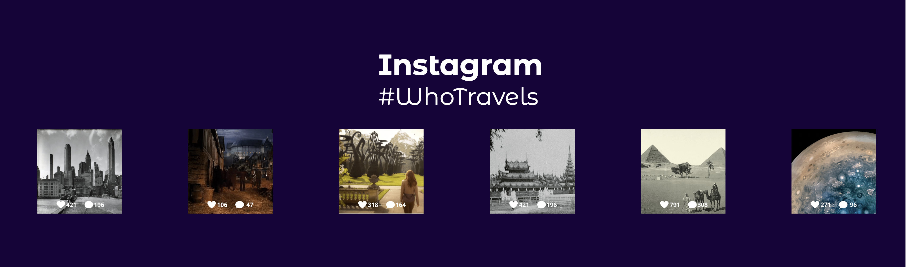
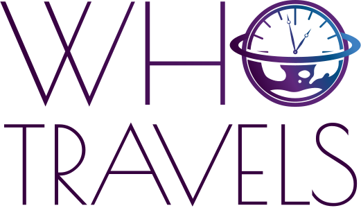

Portfolio
Who Travels Web Design
Because of my interest in coding, I participated in a continued education certificate program at Loyola that specialized in web design. The final group project was to create a company website. The parameters for what company could be were limitless, so we decided to have fun and create a travel agency website that was based off of the popular t.v. show Doctor Who. This led to the creation of Who Travels, a travel agency that lets you go anywhere, any time, in any world.
We all worked together on the code and used Github for a centralized repository. Having prior design experience, I constructed the wireframes and led the design layouts through Figma. This was my first large scale web design project, and my first time working with a team on Github. It was a lot of fun building something on such a large scale from the bottom up and seeing the design come to life.
You can acess the full site here.


×